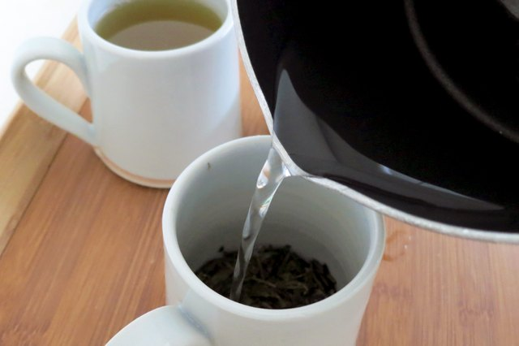

How to Brew Green Tea for Maximum Taste and Health Benefits

How to Brew Green Tea
for Maximum Taste and Health Benefits
If you want to learn how to brew green tea, I'll show you the ropes, quick and easy.
Green tea is one of the most beneficial health tonics you can drink. It's worth the little extra time and trouble it takes to make a truly flavorful and healthy cup. We'll start right at the beginning...
Buy Small Quantities. Since a single ounce of tea should produce 15 to 30 cups, the best way to ensure your tea is fresh is to purchase it in small amounts — two to four ounces at most.
Store It Right. To retain freshness and flavor in both loose and bagged tea, store it in a tightly constructed opaque container to protect it from light, moisture and food odors.
Use a small container just large enough to accommodate the amount of tea; the air in a half-empty container will cause the tea to slowly oxidize.
Store tea in a dark, cool and dry cupboard. Tea stored in the refrigerator or freezer is vulnerable to moisture and odors from other foods, and the condensation that occurs when frozen tea is warmed to room temperature can ruin it.
Should You Use Loose Tea or Tea Bags? Optimal health benefits can be derived from using green tea in its least-processed state — tea leaves. Tea bags don't quite provide the same benefit as the entire green tea leaf, although a superior quality, organic source will do just fine. It's also important to obtain your tea from a source that guarantees the tea's freshness.
How to Brew Green Tea:
Preparing the Water for Steeping
Green teas (and white teas) are more delicate than conventional black tea, so more care is needed in its preparation. Whether you use bagged tea or loose tea, the method is essentially the same.
Start with fresh, cold water, preferably filtered. You don't want that stale water that has been sitting in the kettle on the stovetop since last Monday.
Do not use boiling water to steep the tea in!
Green tea is more delicate, so you want to keep the water a little cooler, about 165-170 degrees F (73-76 C.)
In addition, never heat the water in an aluminum tea kettle, or steep it in a plastic or aluminum container. Better options include stainless steel, porcelain or china, which are non-reactive and don't induce any off-flavors, or worse yet, toxic residues.
How to Brew Green Tea: Tips on Steeping
Green tea is compacted — it needs room to expand as it steeps. Therefore, tea balls are not recommended, unless they're large enough to allow for the expansion of the leaves.
Steeping for two to four minutes is enough to give you all of the health benefits of green tea. It's better to steep at a lower temp for a longer amount of time than to try and force the essence out of the leaves using higher temperatures. Higher temperatures make for a bitter brew. To adjust the taste, it's better to change the quantity of tea, not the temperature or brew time.
How to Brew Green Tea: Measuring the Tea
Typical green teas are brewed with 1 heaping teaspoon (5 grams) per 8 ounces of water, but this can vary depending on the tea. One batch can be used 3 or 4 times. If you're concerned about caffeine, throw out the first batch — most of the caffeine will be in that one.
White tea leaves are less dense and compact, so you’ll probably want to measure out more tea leaves that you normally would. Start by using 2 teaspoons of white tea leaves for every cup (8 ounces) of water. Steeping times can vary depending on the brand of white tea you're using.
How to Brew Green Tea: The Ten-Second Lesson
Now that I've given you all of the intricate details about how to make green tea, here's the short version:
Use loose tea Heat fresh cold water to 165-170 degrees F in a non-reactive teakettle. Let the tea expand while steeping To adjust the taste, change the amount of tea, not the brew time
Potential Toxicity of Green Tea
Green tea has a moderate amount of caffeine content, about half that of coffee. Green tea is known to have high levels of fluoride and aluminum, two highly toxic substances. Decaffeinated green tea has even higher levels of these than regular green tea. Adding lemon to your tea dramatically increases aluminum absorption, maybe by as much as 10 times.
Before you decide on a green tea regimen, you'll want to learn more about the potential health hazards, and how to minimize them, at my page on green tea side effects .
Other pages on this website about green tea:
Green Tea Facts
Green Tea Supplements
Green Tea Health Benefits
Green Tea Side Effects
Antioxidants Home Page from How to Brew Green Tea
Home Site map Health Articles
___
The Basics
Antioxidant Facts Health Benefits Causes of Aging ORAC Values___
Antioxidants
Carotenoids Bioflavonoids Anthocyanins The 'Network' Glutathione Astaxanthin Vitamin C Vitamin E Coenzyme Q-10 Lutein Selenium___
Superfoods
Why Superfoods? Antioxidant Fruits Smoothies Chlorella/Spirulina Coconut Oil Maca Root Chia Seeds Hemp Seeds Flax Seeds Dark Chocolate Herbs & Spices Cinnamon Garlic Green Tea___
Health-Nutrition
Supplements Omega 3 Fats Vitamin D Earthing Salt Lamps Sunscreens___
Resources
Health Articles Antiaging Experts Health Resources Build a Website About Me Contact Share This Site Privacy Policy [ ? ]Subscribe To This Site Get a FREE
Antioxidant Guide
Click to Read Back Issues
Protect the Future of Your Food Supply
Please support
these organizations!
© Copyright 2009-2019 www.antioxidants-for-health-and-longevity.com.
All rights reserved. No reproduction without permission.
This website is written as a source of information only. The information found here should by no means be considered a substitute for the advice of a qualified medical professional, who should always be consulted before beginning any new diet, exercise or other health program. All efforts have been made to ensure the accuracy of the information found here. The author expressly disclaims responsibility for any adverse effects arising from the use of or application of the information contained herein.